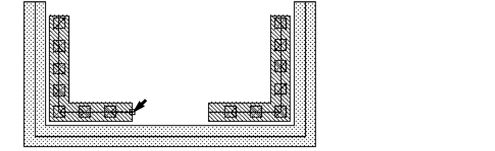
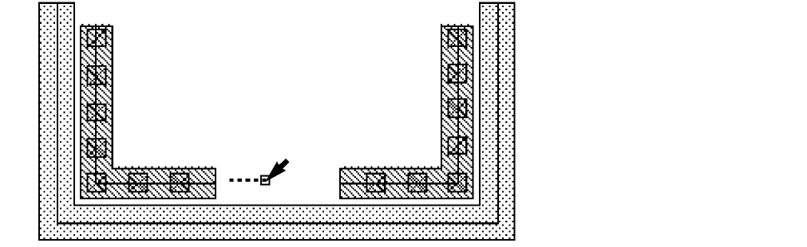
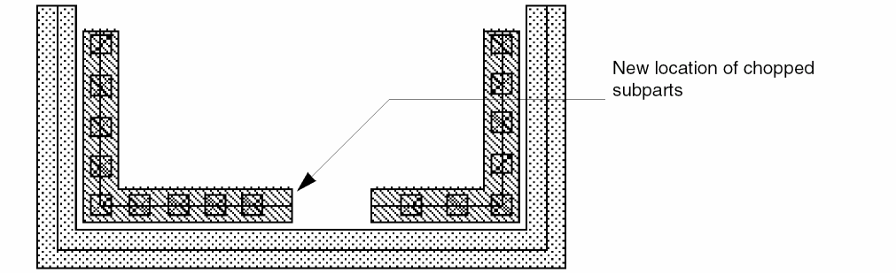
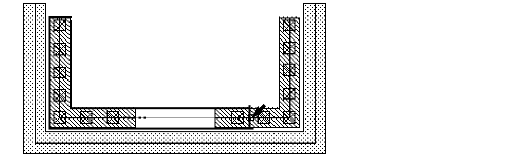
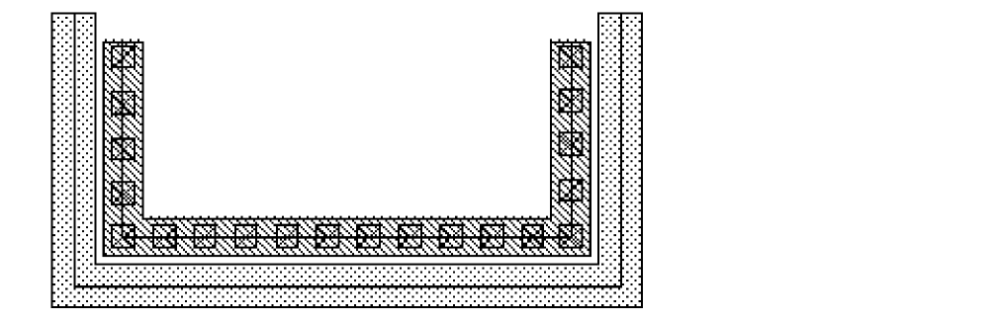

Stretching Chopped Subpath Ends in Multipart Paths
You can select and stretch the ends of chopped subpaths in a multipart path. You might want to do this to reconnect the ends. When you stretch the chopped ends of one or more subpaths, all chopped subparts stretch with the selected subpaths.
You cannot directly select a set of subrectangles, but selecting and stretching the chopped end of a subpath causes all chopped parts in the multipart path to be regenerated, including chopped sets of subrectangles. The system regenerates subrectangles along orthogonal segments only.
To stretch the chopped end of a subpath:
-
In the layout window, choose Edit – Stretch.
Stretch automatically changes to partial selection mode and prompts you to select the object you want to stretch. -
Select a chopped subpath end with a selection box or by clicking on it.
When you use a selection box, Stretch prompts you for a reference point. -
If you are prompted for a reference point, click where you want the stretch to begin.
The reference point does not have to be directly on the path end.
Stretch prompts you to point to the new location. -
Point to a new location for the stretch.
As you point, an outline shows you the new location of the subpath end.
 -
Click to select the new location for the chopped subpath end.
You can reconnect chopped subparts by stretching one subpath end over to the other subpath end. Even if you overlap the ends, the system regenerates the subrectangles correctly. -
Select the same chopped subpath end and point to select the new location so that it overlaps the other chopped subpath end.
As you point, an outline shows you the new location of the subpath end.
The system reconnects the subpaths and regenerates subrectangles to fill the reconnected segment.

Related Topics
Return to top